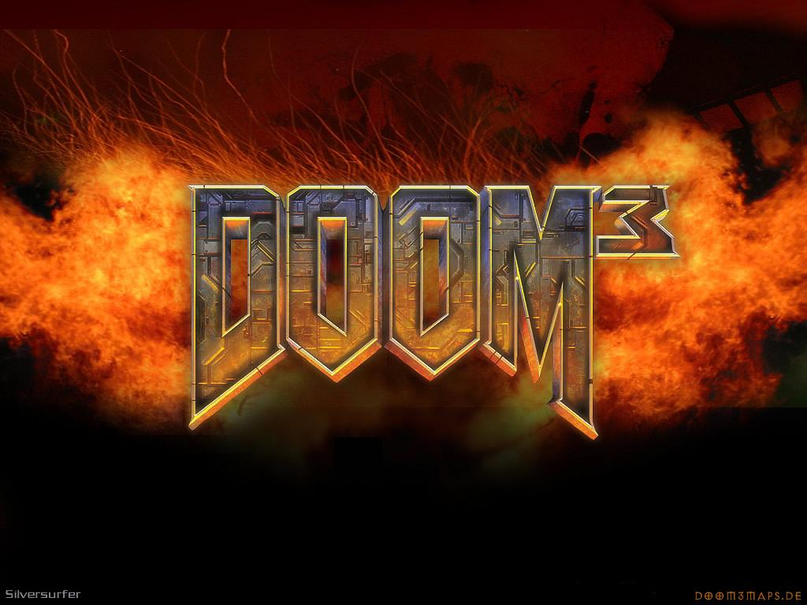

Doom 3 is a science fiction survival horror first-person shooter video game developed by id Software and published by Activision. Doom 3 was first released for Microsoft Windows on August 3, 2004. British developers Splash Damage also assisted in design for the multiplayer elements of the game. The game is a reboot of the Doom franchise, disregarding storylines of the previous Doom video games (however according to the Doom RPG website they are all part of the same universe, it places Doom RPG as a sequel to Doom 3, and prequel to Doom/Doom II all starring the same marine character). Doom 3 is set in 2145 on Mars, where a military-industrial conglomerate has set up a scientific research facility to research into fields such as teleportation, biological research and advanced weapons design. However, the teleportation experiments inadvertently open a gateway to Hell, resulting in a catastrophic invasion by demons. The player, an anonymous space marine, must fight through the base and find a way to stop the demons attacking Earth. Doom 3 features an award-winning game engine, id Tech 4, which has since been licensed out to other developers, and later released under the GNU General Public License in November 2011.
|  | |||
Doom 3 is a story-driven action game played from a first-person perspective. As with previous Doom games, the main objective is to successfully pass through its levels, defeating a variety of enemy characters intent on killing the player's character. Doom 3 's more story-centered approach, however, means that the player often encounters friendly non-player characters, who provide key plot information, objectives and inventory items. The game incorporates ten weapons for the player's use to survive, including conventional firearms and explosives such as a submachine gun, shotgun and grenades, experimental plasma weaponry, and the traditional BFG 9000 and chainsaw weapons of the Doom franchise. Enemies come in multiple forms and with different abilities and tactics, but fall into two broad categories of either zombies or demons. Zombies are humans possessed by demonic forces, who attack the player's character using their hands and melee weapons or a variety of firearms, while demons are creatures from Hell, most of which attack using claws and spines, or by summoning plasma-based fireballs. The corpses of demons are reduced to ashes after death, leaving no trace of their body behind.
The game's levels are fairly linear in nature and incorporate several horror elements, the most prominent of which is darkness. This design choice is not only intended to foster feelings of apprehension and fear within the player, but also to create a more threatening game environment in which the player is less likely to see attacking enemies.This aspect is further enhanced by the fact that the player must choose between holding a weapon and holding the flashlight (until the BFG editions released in 2012 made the "duct tape mod" a standard feature), forcing the player to choose between being able to see and having a readied weapon upon entering a room, which consequently leads to a more deliberate pace for the player. In addition, the levels are regularly strewn with corpses, dismembered body parts and blood, sometimes used in conjunction with the game's lighting to disorient the player.
Frequent radio transmissions through the player's communications device also add to the atmosphere, by broadcasting certain sounds and messages from non-player characters meant to unsettle the player. Early in the game, during and directly after the event that plunges the base into chaos, the player often hears the sounds of fighting, screaming and dying through their radio transmitter. The ambient sound is extended to the base itself through such things as hissing pipes, footsteps, and occasional jarringly loud noises from machinery or other sources. Often ambient sounds can be heard that resemble deep breathing, unexplained voices and demonic taunting from the game's antagonists. Early in the game, the player is provided with a personal data assistant (PDA). PDAs contain security clearance levels, allowing the player to access certain areas that are otherwise locked and off-limits. Additionally, the PDA can be used to read e-mails and play videos that the player's character acquires during the game. Whenever the player picks up any of the other PDAs found throughout the game, its contents are automatically downloaded to the player's own device. Other PDAs often contain e-mails and audio logs for other characters, which can provide useful information such as storage or door key codes, as well as significant plot details.